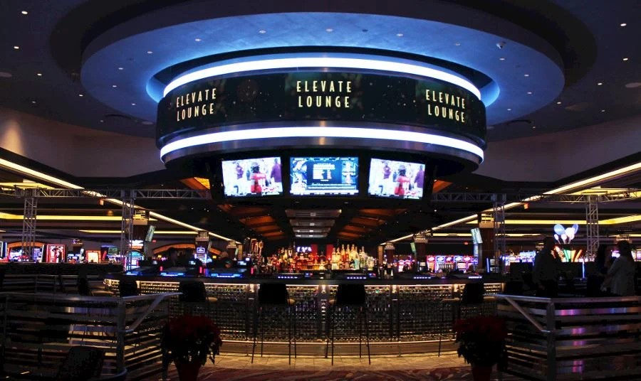

Schedule of Events
Any questions? Check out our FAQ page or
feel free to
reach out anytime!
Built by Joel 😀
-
Ceremony & Reception
Park Winters Saturday, Oct 05, 5pm-11pm Suggested attire is Garden Cocktail. Dinner will be held outside until around 9:00pm, so you may wish to bring a light layer. -

After Party
Cache Creek Casino Resort Saturday, Oct 05, 11:30pm onwards We will be hanging out in the 16 West Bar & Lounge in Cache Creek's South Tower after the wedding finishes, and would love to chat more with everyone! -
Farewell Brunch
Turkovich Family Wines Sunday, Oct 06, 10:30am-1pm Please be sure to route to the winery on Buckeye Road, and not the downtown Winters tasting room!